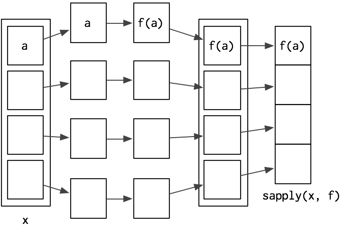

Repaso de la clase anterior
“subsetting” con la función subset()
Return subsets of vectors, matrices or data frames which meet conditions.
subset(airquality, Temp > 80, select = c(Ozone, Temp))
subset(airquality, Day == 1, select = -Temp)
subset(airquality, select = Ozone:Wind)
Operadores lógicos
Son operadores que permiten comparar dos enunciados y evaluan a resultado lógico.
-
, >=
- <, <=
-
!=, ==
-
los operadores & (AND) y (OR) para elaborar enunciados más complejos.
Combinando operadores construimos expresiones condicionales, que R evalua a TRUE o FALSE (o NA).
Ejecución condicional
if (condición) {
# código que se ejecuta cuando la condición evalua a TRUE
} else {
# código que se ejecuta cuando la condición evalua a FALSE
}
Nota: Si el if() tiene una sola línea, podemos obviar las {} ;-)
if (this) {
# do that
} else if (that) {
# do something else
} else {
#
}
funciones lógicas accesorias
- any()
- all()
- is.na(), is.null() y el resto de la familia is.algo()
- %in%
- identical()
- muchas otras
Componentes de un for
Loops son bucles y se usan para repetir código
- Output: siempre es buena idea crear el objeto antes de calcularlo
-
Secuencia: variable sobre la que funciona el bucle
for (x in xs) for(i in seq_along(df)) for (nm in names(xs)) - Cuerpo: código que se ejecuta las veces que la secuencia indique
While es un loop controlado por una expresión condicional
Nota: Si el for() o el while() tienen una sola línea, podemos obviar las {} ;-)
Vectorización
Se trata de operaciones que aplican a un vector, pero elemento por elemento.
- Los pasos se simplifican al no pensar en los elementos del vector, si no en el vector en sí.
-
Los bucles en una función vectorizada están hechos en C y no en R, y por lo tanto son mucho más rápidos.
sin vectorización
for (i in 1:length(x)) z[i] <- x[i] + y[i]
con vectorización
z <- x + y
operadores y funciones vectorizados
-
==, &, y - corchetito: Por ej, x[is.na(x)] <- 0 donde x es vector, matriz o df
- otras funciones: +, -, *, cumsum(), diff(), rowSums(), colSums(), rowMeans(), colMeans(), etc.
-
any(x == 10) es mucho más rápido que 10 %in% x.
c(T,T,F,F) == c(T,F,T,F) [1] TRUE FALSE FALSE TRUE c(T,T,F,F) & c(T,F,T,F) [1] TRUE FALSE FALSE FALSE c(T,T,F,F) | c(T,F,T,F) [1] TRUE TRUE TRUE FALSE
Eficiencia
> x <- runif(1000000)
> y <- runif(1000000)
> z <- vector(length=1000000)
> system.time(z <- x + y)
user system elapsed
0.052 0.016 0.068
> system.time(for (i in 1:length(x)) z[i] <- x[i] + y[i])
user system elapsed
8.088 0.044 8.175
Funcionales - Familia *apply()
lapply(), sapply(), apply() y tapply() (hay más…)
Combinan algo similar a vectorización con funciones. Suelen ser la respuesta a “cómo hago para procesar (por ejemplo transformar o extraer información de) cada elemento de este objeto?”
Hemos hecho cosas similares con summarise() + group_by() y mutate().
Ref: ver también el paquete plyr, esta web y este paper
lapply()
LLama a una función especificada en cada componente de una lista y devuelve otra lista

> lapply(list(1:3,25:29), median)
[[1]]
[1] 2
[[2]]
[1] 27
sapply()
En algunos casos, la lista que devuelve lapply() puede ser simplificada a un vector o a una matriz. Esto es justo lo que hace sapply().

> sapply(list(1:3,25:29),median)
[1] 2 27
lapply() y sapply() en Data Frames
Tanto lapply como sapply están pensados para listas, por lo tanto funcionan bien en data.frames
lapply(economics, mean)
$date
[1] "1991-05-17"
$pce
[1] 4843.51
$pop
[1] 257189.4
$psavert
[1] 7.936585
$uempmed
[1] 8.610105
$unemploy
[1] 7771.557
> sapply(economics, mean)
date pce pop psavert uempmed unemploy
7.806399e+03 4.843510e+03 2.571894e+05 7.936585e+00 8.610105e+00 7.771557e+03
apply()
apply es para matrices. Tienen la particularidad que podemos elegir aplicar una función a filas o a columnas.
apply(m,dimcode,f,fargs)
- m: matriz
- dimcode: 1 o 2, 1 se aplicamos a filas, 2 a columnas
- f: función que vamos a aplicar
-
fargs: argumentos adicionales
z [,1] [,2] [1,] 1 4 [2,] 2 5 [3,] 3 6
apply(z,2,mean) [1] 2 5
apply() - un ejemplo con función propia
> z
[,1] [,2]
[1,] 1 4
[2,] 2 5
[3,] 3 6
> f <- function(x) x/c(2,8)
> y <- apply(z,1,f)
>y
[,1] [,2] [,3]
[1,] 0.5 1.000 1.50
[2,] 0.5 0.625 0.75
tapply()
para aplicar funciones a vectores con factores
> ages <- c(25,26,55,37,21,42)
> affils <- c("R","D","D","R","U","D")
> tapply(ages,affils,mean)
D R U
41 31 21
> d <- data.frame(list(gender=c("M","M","F","M","F","F"),
+ age=c(47,59,21,32,33,24),income=c(55000,88000,32450,76500,123000,45650)))
>d
gender age income
1 M 47 55000
2 M 5 9 88000
...
> d$over25 <- ifelse(d$age > 25,1,0)
>d
gender age income over25
1 M 47 55000 1
2 M 59 88000 1
...
> tapply(d$income,list(d$gender,d$over25),mean)
0 1
F 39050 123000.00
M NA 73166.67
Práctica 9
- Como se comparan los resultados de mean() y mean.default() con 10000 observaciones, en vez de con 100? Usar system.time().
- Comparar la velocidad de apply(x, 1, sum) con rowSums(x) para x de distintos tamaños. Usar system.time().
-
El código a continuación simula el desempeño de un t-test para datos no normales. Usen sapply() y una función (puede ser anónima, es decir no necesitan nombrarla) para extraer el p-value de cada ‘tirada’. Nota: rpois() nos devuelve una ‘tirada’ de variable aleatoria (como si fuera tirar una moneda) de una distribución de Poisson.
trials <- replicate( 100, t.test(rpois(10, 10), rpois(7, 10)), simplify = FALSE )